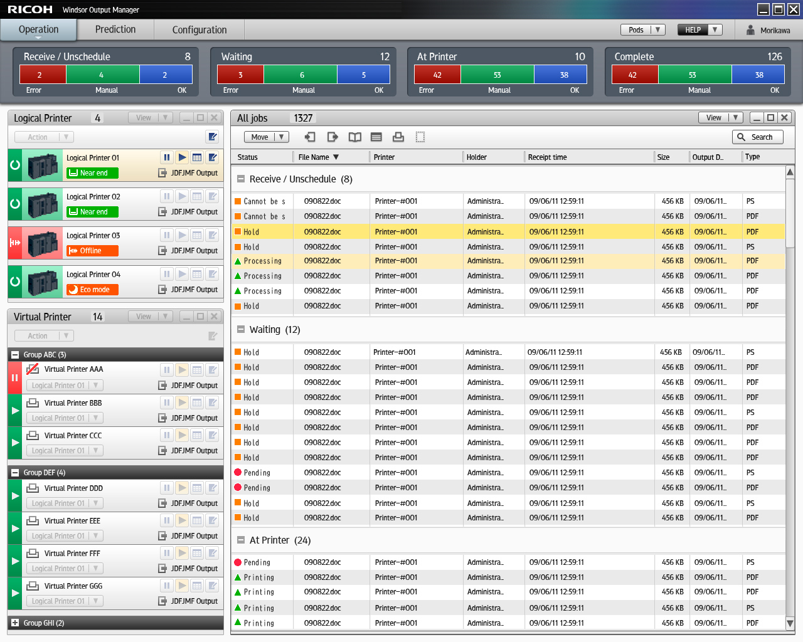
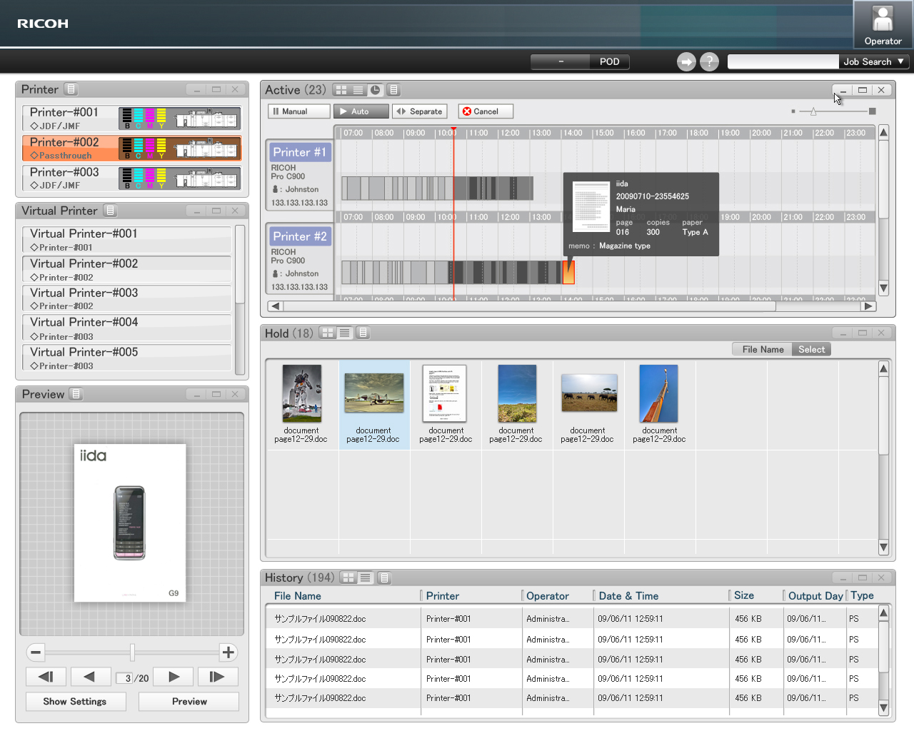
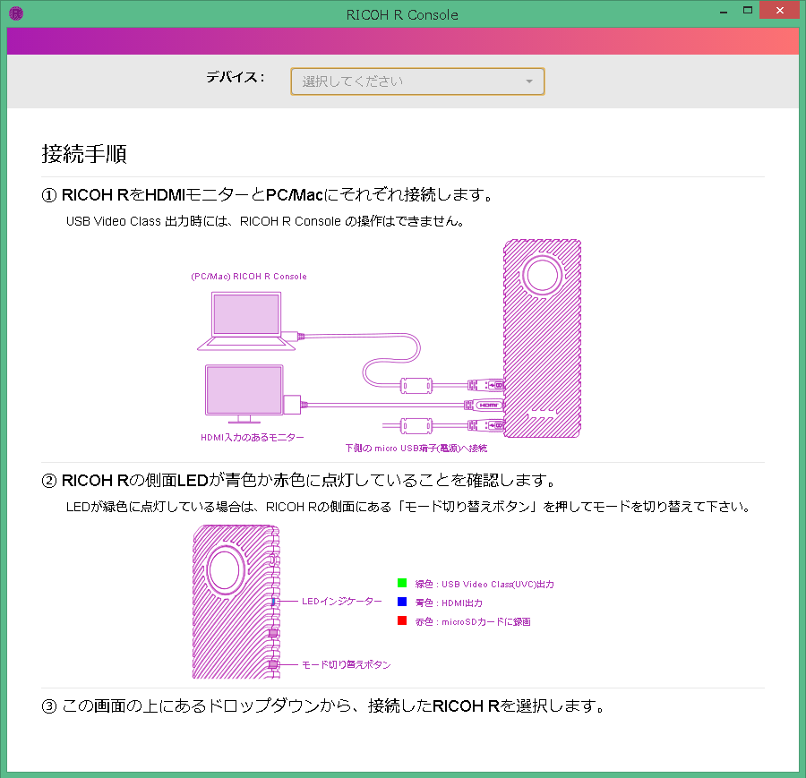
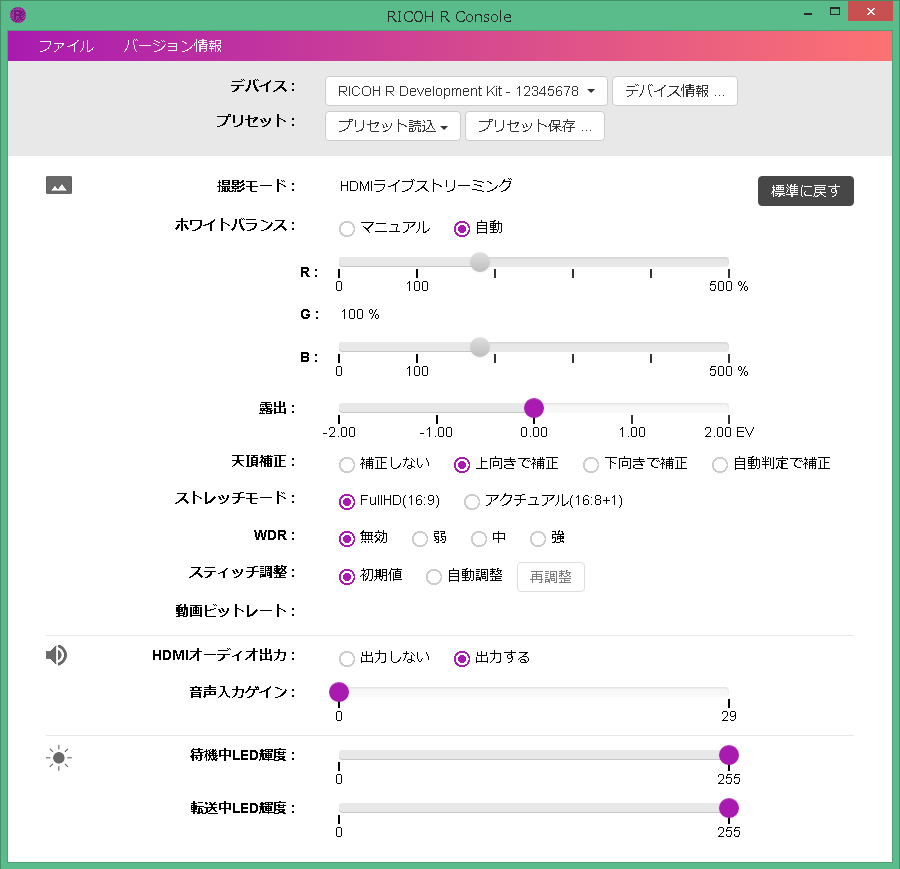

Selected Work — 04
エンタープライズ
UX設計
業務現場の調査から要件定義・画面設計・マニュアル制作まで。4名のデザイナーをディレクションしながら、複数のエンタープライズ向けプロダクトを設計・開発した。
Process
現場から始めて、製品に仕上げる。
ユーザーの業務環境に入り込み、実際の作業フローと課題を観察することから始める。ヒアリングだけでは見えない「暗黙の非効率」を掘り起こし、要件定義・情報設計・画面設計・ドキュメント制作まで一気通貫でディレクションした。
01
現場調査
エスノグラフィー・業務観察・インタビュー
02
要件定義
業務フロー整理・情報設計・優先度設定
03
UI設計
ワイヤーフレーム・プロトタイプ・レビュー
04
開発連携
デザイン仕様書・エンジニアとの実装確認
05
ドキュメント
ユーザーマニュアル・サポート資料制作
Project 01
印刷会社向け
業務ワークフロー管理システム
印刷会社の制作現場に繰り返し入り、入稿から出力・納品までの全工程を観察した。複数の担当者が同時並行で案件を扱う環境で、進捗の「見える化」と優先度の判断を支援するダッシュボードを設計。ジョブの状態・担当者・優先度・期限を一画面で把握できるインターフェースとした。

ジョブ管理ダッシュボード — ステータス別一覧とサムネイル表示

タイムライン表示 — ジョブの進行状況とファイルプレビュー
Project 02
全天球カメラ
コントロールUI
RICOH R Development Kit向けのPC用コントロールアプリケーション。開発者・業務利用者を対象ユーザーとして、デバイスの接続から撮影パラメータの設定・プリセット管理まで、専門的な設定項目をわかりやすく整理した。ホワイトバランス・露出・天頂補正・HDMIストリーミングなど複雑なパラメータを、迷いなく操作できる画面構成を目指した。

接続手順ガイド画面

カメラパラメータ設定画面
ユーザーマニュアルもHTML形式で制作。機能説明・操作手順・トラブルシューティングを体系的に整理し、開発キットの外部提供に合わせてドキュメントとして公開した。
Direction
チームのディレクション。
4名のデザイナーをリードし、プロジェクトごとに役割分担・スケジュール管理・品質レビューを担った。現場調査の同行、ユーザーへのプレゼンテーション、エンジニアとの仕様調整まで、デザインとビジネスの橋渡し役を務めた。
- チーム規模
- デザイナー 4名
- 役割
- ディレクション・UX設計・品質管理
- 関与範囲
- 調査 → 要件 → 設計 → ドキュメント